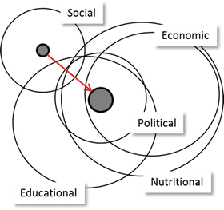

Marginalization is defined as a treatment of a personal or social group as minor, insignificant or peripheral.It involves exclusion of certain groups from social interactions, marriage relations, sharing food, drinks, working and living togrther. There are marginalized social groups in every society and culture.Women, childiren, older people and people with disabilities are among marginalized group across the world. Religious,ethic and racial minorities are also among social groups marginalized in different societies and cultures. Crafts workers such as tanners, and ironsmiths are marginalized in many parts of ethiopia
